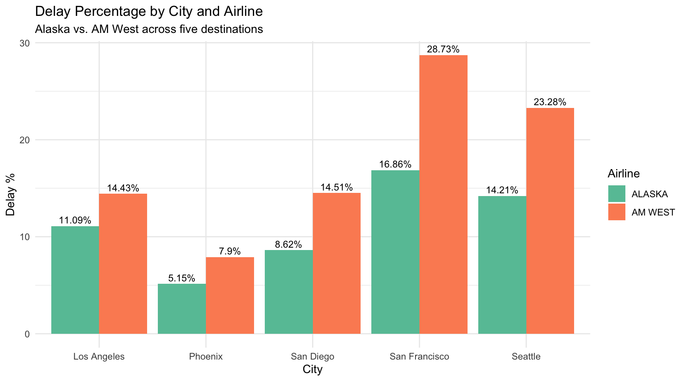
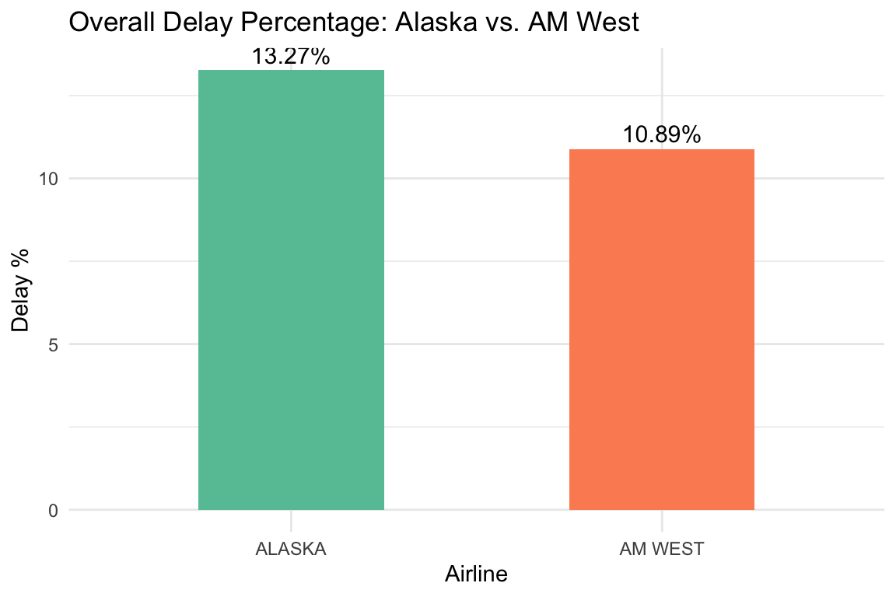

library(tidyr)
library(dplyr)
library(ggplot2)
library(knitr)5a-airline-delays
Introduction
This assignment examines arrival delay data for two airlines, Alaska and AM West, across five U.S. destinations.
Planned approach:
- Read the CSV and clean it by removing the blank row and filling in missing airline names.
- Pivot the data from wide to long format using
tidyr. - Calculate delay percentages (not just raw counts) for each airline both overall and per city.
- Compare the two airlines using tables and visualizations.
- Discuss the results and findings.
Solution
Step 1 — Read the CSV, clean and fill missing data
Read the file exactly as structured.
file_path = "https://raw.githubusercontent.com/qingquan-li/Data607/refs/heads/main/week5/data/airline_delays.csv"
raw <- read.csv(file_path, header = TRUE, check.names = FALSE)
kable(raw, caption = "Raw CSV data (wide format, as provided)")| airline | status | Los Angeles | Phoenix | San Diego | San Francisco | Seattle |
|---|---|---|---|---|---|---|
| ALASKA | on time | 497 | 221 | 212 | 503 | 1841 |
| delayed | 62 | 12 | 20 | 102 | 305 | |
| NA | NA | NA | NA | NA | ||
| AM WEST | on time | 694 | 4840 | 383 | 320 | 201 |
| delayed | 117 | 415 | 65 | 129 | 61 |
The data contains an empty row and the airline column has blank cells that need to be filled.
# Remove completely empty rows
cleaned <- raw %>%
filter(!(is.na(airline) | airline == "") | !(is.na(status) | status == "")) %>%
filter(rowSums(is.na(.) | . == "") != ncol(.))
# Fill missing airline names forward (the blank cell inherits the airline above it)
cleaned <- cleaned %>%
mutate(airline = na_if(airline, "")) %>%
fill(airline, .direction = "down")
kable(cleaned, caption = "Cleaned wide-format data (missing values populated)")| airline | status | Los Angeles | Phoenix | San Diego | San Francisco | Seattle |
|---|---|---|---|---|---|---|
| ALASKA | on time | 497 | 221 | 212 | 503 | 1841 |
| ALASKA | delayed | 62 | 12 | 20 | 102 | 305 |
| AM WEST | on time | 694 | 4840 | 383 | 320 | 201 |
| AM WEST | delayed | 117 | 415 | 65 | 129 | 61 |
Step 2 — Pivot from wide to long format
long <- cleaned %>%
pivot_longer(
cols = `Los Angeles`:Seattle,
names_to = "city",
values_to = "flights"
)
kable(head(long, 10), caption = "Long-format data (first 10 rows)")| airline | status | city | flights |
|---|---|---|---|
| ALASKA | on time | Los Angeles | 497 |
| ALASKA | on time | Phoenix | 221 |
| ALASKA | on time | San Diego | 212 |
| ALASKA | on time | San Francisco | 503 |
| ALASKA | on time | Seattle | 1841 |
| ALASKA | delayed | Los Angeles | 62 |
| ALASKA | delayed | Phoenix | 12 |
| ALASKA | delayed | San Diego | 20 |
| ALASKA | delayed | San Francisco | 102 |
| ALASKA | delayed | Seattle | 305 |
Step 3 — Spread status into separate columns for easier calculation
wide_status <- long %>%
pivot_wider(names_from = status, values_from = flights) %>%
rename(on_time = `on time`) %>%
mutate(
total = on_time + delayed,
pct_delayed = round(delayed / total * 100, 2),
pct_ontime = round(on_time / total * 100, 2)
)
kable(wide_status, caption = "Flights by airline and city with delay percentages")| airline | city | on_time | delayed | total | pct_delayed | pct_ontime |
|---|---|---|---|---|---|---|
| ALASKA | Los Angeles | 497 | 62 | 559 | 11.09 | 88.91 |
| ALASKA | Phoenix | 221 | 12 | 233 | 5.15 | 94.85 |
| ALASKA | San Diego | 212 | 20 | 232 | 8.62 | 91.38 |
| ALASKA | San Francisco | 503 | 102 | 605 | 16.86 | 83.14 |
| ALASKA | Seattle | 1841 | 305 | 2146 | 14.21 | 85.79 |
| AM WEST | Los Angeles | 694 | 117 | 811 | 14.43 | 85.57 |
| AM WEST | Phoenix | 4840 | 415 | 5255 | 7.90 | 92.10 |
| AM WEST | San Diego | 383 | 65 | 448 | 14.51 | 85.49 |
| AM WEST | San Francisco | 320 | 129 | 449 | 28.73 | 71.27 |
| AM WEST | Seattle | 201 | 61 | 262 | 23.28 | 76.72 |
Step 4 — Compare delay rates
Compare delay rates by city and airlines
city_comparison <- wide_status %>%
select(city, airline, total, delayed, pct_delayed) %>%
arrange(city, airline)
kable(city_comparison,
caption = "Delay percentage by city and airline",
col.names = c("Airline", "City", "Total Flights", "Delayed Flights", "% Delayed"))| Airline | City | Total Flights | Delayed Flights | % Delayed |
|---|---|---|---|---|
| Los Angeles | ALASKA | 559 | 62 | 11.09 |
| Los Angeles | AM WEST | 811 | 117 | 14.43 |
| Phoenix | ALASKA | 233 | 12 | 5.15 |
| Phoenix | AM WEST | 5255 | 415 | 7.90 |
| San Diego | ALASKA | 232 | 20 | 8.62 |
| San Diego | AM WEST | 448 | 65 | 14.51 |
| San Francisco | ALASKA | 605 | 102 | 16.86 |
| San Francisco | AM WEST | 449 | 129 | 28.73 |
| Seattle | ALASKA | 2146 | 305 | 14.21 |
| Seattle | AM WEST | 262 | 61 | 23.28 |
ggplot(wide_status, aes(x = city, y = pct_delayed, fill = airline)) +
geom_col(position = "dodge") +
geom_text(aes(label = paste0(pct_delayed, "%")),
position = position_dodge(width = 0.9), vjust = -0.4, size = 3.2) +
labs(
title = "Delay Percentage by City and Airline",
subtitle = "Alaska vs. AM West across five destinations",
x = "City", y = "Delay %", fill = "Airline"
) +
theme_minimal() +
scale_fill_brewer(palette = "Set2")
City-by-city finding: In every single city, Alaska Airlines has a lower delay percentage than AM West.
Compare overall delay rates
overall <- wide_status %>%
group_by(airline) %>%
summarise(
total_flights = sum(total),
total_delayed = sum(delayed),
total_on_time = sum(on_time),
.groups = "drop"
) %>%
mutate(
pct_delayed = round(total_delayed / total_flights * 100, 2),
pct_ontime = round(total_on_time / total_flights * 100, 2)
)
kable(overall,
caption = "Overall delay percentage by airline",
col.names = c("Airline", "Total Flights", "Delayed", "On Time",
"% Delayed", "% On Time"))| Airline | Total Flights | Delayed | On Time | % Delayed | % On Time |
|---|---|---|---|---|---|
| ALASKA | 3775 | 501 | 3274 | 13.27 | 86.73 |
| AM WEST | 7225 | 787 | 6438 | 10.89 | 89.11 |
ggplot(overall, aes(x = airline, y = pct_delayed, fill = airline)) +
geom_col(width = 0.5) +
geom_text(aes(label = paste0(pct_delayed, "%")), vjust = -0.4, size = 4) +
labs(
title = "Overall Delay Percentage: Alaska vs. AM West",
x = "Airline", y = "Delay %"
) +
theme_minimal() +
scale_fill_brewer(palette = "Set2") +
theme(legend.position = "none")
Overall finding: When we aggregate across all cities, Alaska Airlines has a higher overall delay percentage than AM West — the opposite of the city-by-city result!
Conclusion
Simpson’s Paradox
This dataset is a classic example of Simpson’s Paradox: a trend that appears in individual groups (cities) reverses when the groups are combined.
City-by-city, Alaska beats AM West in every destination — its delay rate is lower in Los Angeles, Phoenix, San Diego, San Francisco, and Seattle.
Overall, AM West appears to perform better with a lower aggregate delay percentage.
Why does this happen?
The explanation lies in each airline’s route mix. Alaska Airlines flies the vast majority of its flights to Seattle, a high-delay city, while AM West concentrates heavily on Phoenix, a low-delay city.
Takeaway
Raw aggregate comparisons can be misleading. When evaluating airline performance (or any grouped data), it is essential to control for confounding variables, in this case, the distribution of flights across cities.
The city-level comparison provides a fairer appraisal, and by that measure, Alaska Airlines has a better on-time record than AM West in every destination studied.